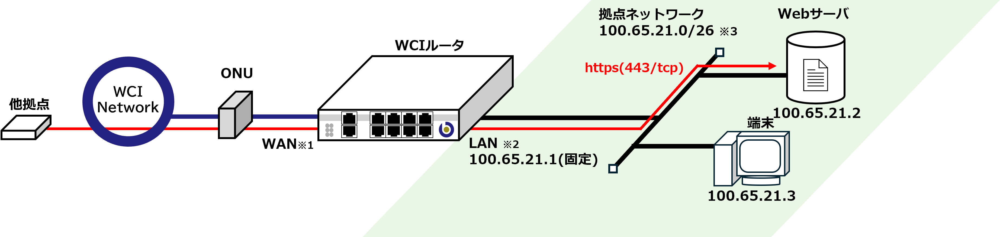

Webサーバを公開する
本事例は、拠点ネットワークにWCIアドレスを直接的に割り当てる最もシンプルな構成です。
拠点ネットワーク内に、Webサーバ(443/tcp)を設置しWCIネットワーク(IPv4)に公開します。
接続構成
接続構成図
{kind=link}
注意
※1,2 導入機種により接続ポートが異なります。詳しくは" WCIルータについて "の導入機種に応じたポート対応表をご確認下さい。
※3 ご契約拠点により、WCIアドレスおよびサブネットの割当範囲が異なります。別途ご確認下さい。本資料ではWCIアドレス割当範囲を
100.65.21.0/26、WCIルータのLANポートアドレスを 100.65.21.1 として記載します。WCIポータルの設定
端末 から WCI Portal (https://portal.bbwci.net)にアクセスしログインします。
サブネットの登録

[サブネット管理] より、IPv4アドレス欄の [登録] ボタンを押下します。

[サブネット名] に名称を設定します。
sample_single_subnet[プレフィックス] を指定します。プレフィックスは任意のサイズを割り当てることが可能ですが本事例では
/26を設定します。[ネットワークアドレス] を指定します。
100.65.21.0を設定します。[登録] ボタンを押下します。

画面に先ほど設定したサブネットが登録されている事を確認します。 このサブネットが拠点ネットワークのアドレス帯となります。
接続
他拠点との接続については別紙 WCI Portal 利用手順書 をご確認ください。
接続で指定するサブネットは本事項で作成したものを指定してください。
フィルタ管理

画面の [新規] ボタンを押下します。

フィルタ登録画面にて、[サブネットID] を押下します。

サブネット選択画面にて先ほど登録した サブネット 100.65.21.0/26 の行の [選択] を押下します。

フィルタ登録画面にて、サブネットが選択されたことを確認します。
続いて、フィルタリング (インバウンド)にて [追加] ボタンを押下します。
[プロトコル] :
TCP, [ポート] :443と設定します。[登録] ボタンを押下します。
これで、接続している他拠点に対して、Webサーバを公開する設定が完了しました。
また、拠点ネットワーク内の端末からWCI Portalや他接続拠点で公開されているサービスへのアクセスが可能となります。
注意
本事例の場合、接続構成図の 端末 を含め拠点ネットワーク内の全てのデバイスに対する
443/tcp も許可する設定となります。よりセキュアで柔軟な設定を行う場合は " Webサーバを公開する(NAT,NAPT) "の構成を推奨いたします。
Tip
本事例では
443/tcp を許可する設定ですが許可するプロトコル・ポートを変更することで任意のサービスを公開することが可能です。